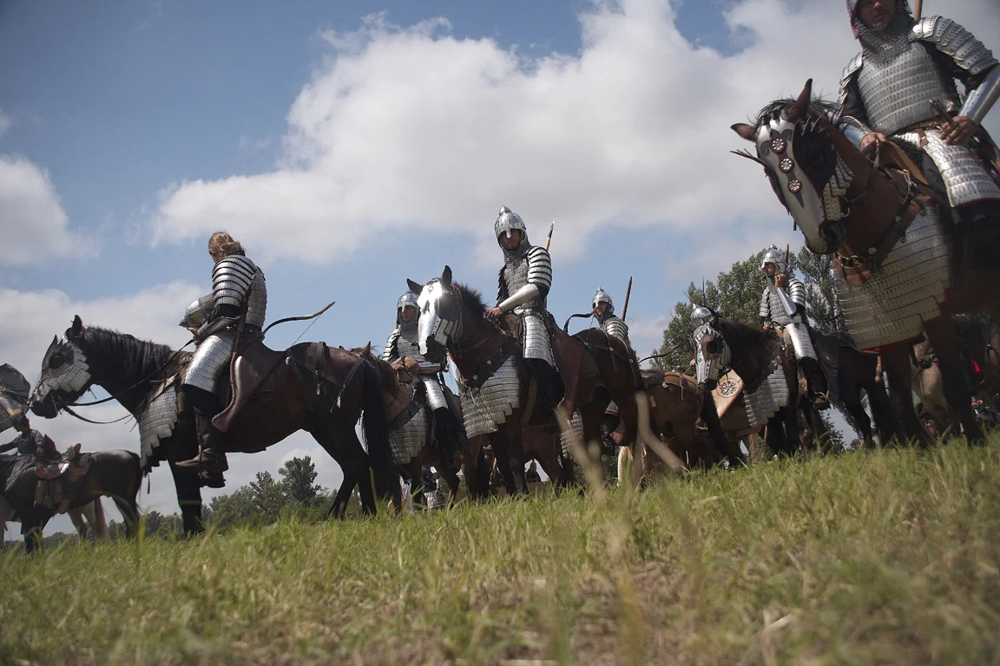
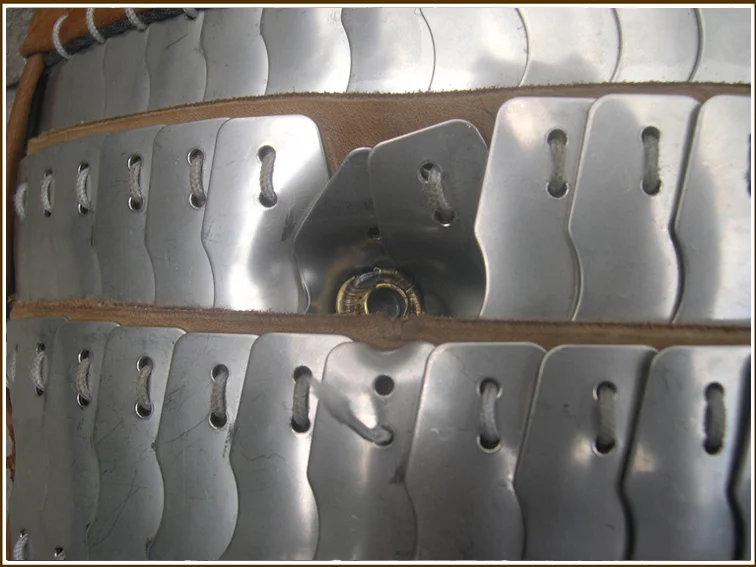
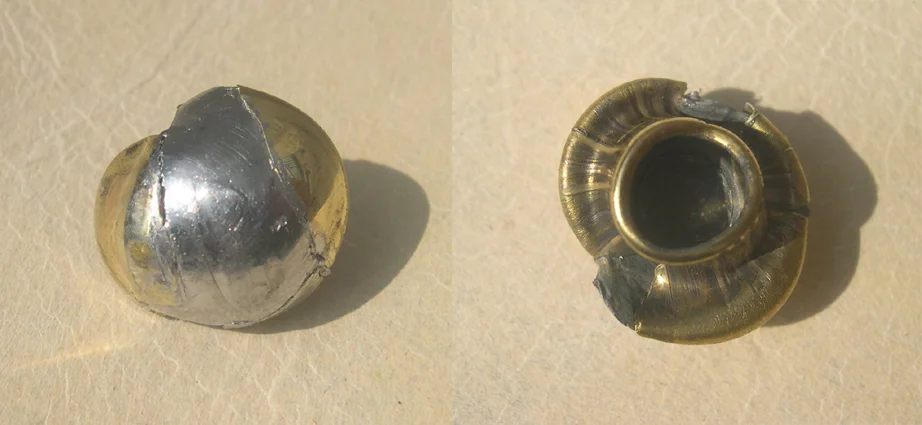
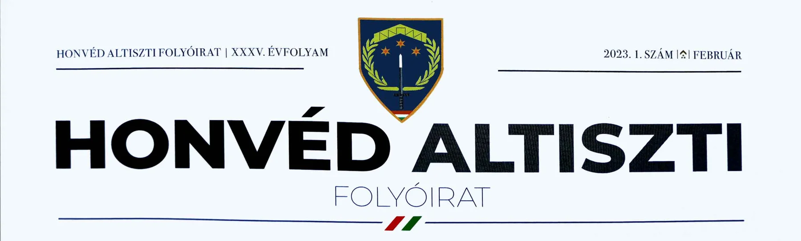

9 mm-es hadipisztoly szemben egy VI-VIII. századi „védőmellénnyel” – Lövésteszt lovasíjász vértre
Az ember kíváncsi természetű. Jó esetben a katona sem kivétel ez alól. Néhány éve hasonló gondolkodású emberek egy maroknyi csapata megpróbált utána járni néhány – a katona számára érdekes - eszköz működésének, hatásfokának, alkalmazásának. A megismerés vágya, a kíváncsiság hajtotta őket. Ebbe a csapatba csöppentem bele jómagam, egyedüli katonaként. Jelen írásban egy érdekes tárgyat, nevezetesen a lovasíjász vértezetek egyik változatát szeretném részletesebben bemutatni. Azért választottam ezt, mivel talán ez a leglátványosabb darabja a harcos felszerelésének. Ezen írással a figyelmet szeretném ráirányítani arra az elszomorító tényre, hogy egy VI-VIII. századi kárpát-medencei lovasharcos vért meg sem jelenik a mindent elárasztó, számunkra idegen korabeli harci eszközöket tartalmazó és bemutató kiadványok közt. Jelenleg számomra nem ismert olyan szakmai, vagy szakmai jellegű kiadvány (legyen az nyomtatott, vagy elektronikus), melyben ez eddig visszaköszönt volna, legalább említés szintjén. Érvényes ez a megállapításom az egész lovasíjász harci technikára, melyből ezt az egy tárgyat kiragadtam szemléltetés céljából. Elméleti szakemberek íróasztaluk mellett csak találgatva, feltételezve, de nem kipróbálva alkották meg a témában, a máig nehezen felszámolható sztereotípiákat, rossz beidegződéseket. A lovasíjász harci technikát magyarázó korábbi uralkodó elmélet nélkülözte a gyakorlati tapasztalatot. Számos elgondolás várt kipróbálásra. Magyarországon a gyakorlati, vagy kísérleti régészet gyermekcipőben járt, mondhatni nem létezett. Viszont az általunk feszegetett kérdésekre (Hogyan nézett ki? Hogyan működhetett? Hogyan alkalmazták?) csak is az elmélet és a gyakorlat közösen adhatta meg a választ.
Amiből kiindulhattunk az az a tény, ami vitán felül áll: a lovasíjász fegyvernem tizenhat-tizenhét évszázadon keresztül az egyik legütőképesebb, legsikeresebb volt. Harcosai a legmagasabb harcértéket képviselték minden őket alkalmazó hadseregben. Katonai szakirodalomban viszont nyomát sem találni. Ha mégis, akkor természetesen a megszokott frázisokkal találkozhatunk, amiket mindenki ismer. Ha viszont komolyan vizsgáljuk a kérdést, természetesen kétség sem férhet ahhoz a tényhez, miszerint a lovasíjász seregek jól megtervezett és pontosan kivitelezett katonai akciókat hajtottak végre. Nehezen elképzelhető egy több ezer kilométeres, több hónapon át tartó sikeres hadjárat kivitelezése gyülevész rablókkal, rosszul felszerelt fegyelmezetlen hordákkal. Márpedig számos sikeres hadjáratot és óriási kiterjedésű birodalmat ismerünk, melynek alapja és biztosítéka a lovasíjász harcosokból álló hadsereg. Miért lehetett ilyen sikeres? Hogyan működött? Ehhez elemekre kellett bontani, majd újra megismerve, felépíteni. A lovasíjászat mára már közismertté vált a világon. Lovasíjász központok alakultak meg Kínától Amerikáig. Hírét viszik harci kultúránknak, melyre úgy gondolom, méltán lehetünk büszkék! Ahhoz, hogy ez idáig eljusson, a gyakorlati régészeti munka adta az alapot.
A XX. században a lovasíjászat nem létezett. Nem léteztek az eszközök, nem létezett a tudás, mely ahhoz szükséges, hogy vágtató ló hátáról a nyil a célba csapódjon. A kétezres évek elején a lovasíjászat, mint sport, elindult útjára a világon. Vele párhuzamosan pedig folytatódott a kutató munka és további célokat tűztünk ki magunk elé. Ez nem volt kisebb, minthogy a hadsereg legkisebb egységét jelenítsük meg egy változatban. Mégpedig képzett lovakon, képzett lovasok, teljes harci felszereléssel, fegyverzettel. Lovak, lovasaikkal összhangot alkotva, az egység pedig összekovácsolt csapatként, készen bármilyen korabeli lovas harci feladat kivitelezésére. A terv egy tíz főből és tíz lóból álló egység volt. Az eredmény 10 évvel a terv megszületése után, hét felszerelt, jól kiképzett lovas és tíz, szintén jól felkészített, felszerelt ló, mely képes volt szemléltetni, hogy hogyan is nézhetett ki a legkisebb köteléke eme rettegett hadseregnek. A látvány magáért beszélt.

Az impozáns látványt nyújtó lovas tized 2010-ben mutatkozott be a nagy nyilvánosság előtt. Emberek tízezrei tekintették meg napokon keresztül, a (külföldi) média segítségével pedig eljuthatott emberek millióihoz a világon. A visszajelzések egyértelműen pozitívak voltak. A szakma (hadtudománnyal foglalkozó, hivatalos) viszont nem mutatott érdeklődést. Ez sarkallott figyelemfelkeltő cikkem írására. A következő sorokban jellemzem magát a vértet és ejtek néhány szót a harci felszerelés egyéb részeiről is. A vért egy lamellás szerkezetű, kompozit, azaz bőr és fém összetevőkből álló egység. Aláöltözet („puffer réteg”) nem szükséges. A test felé eső részen a bőr található, mely rossz hővezető, így sem a meleget sem a hideget nem közvetíti. Viselése így jóval komfortosabb a tisztán fémből készült vértekhez képest.
A Budakalászon és Kunszentmártonban talált lamella típus adja az alapot. A teljes vért a viselője magasságától függően kb. 1600 darab 7 x 3 cm befoglaló méretű, hat furattal ellátott, szimmetrikus lamella típusból áll, amely formavilágában és szerkezetében a korabeliekkel nagyjából egyező felület és védelem létrehozását tette lehetővé. Részei: mell- hát- váll (12,8 kg)- alkar (1,4 kg)- láb- ágyék- far (8,2 kg)- vértrészekkel, sisakkal (3,8 kg), lófej- és szügy- vértekkel (16 kg), páncélzat és a fegyverzet súlyát kiválóan elosztó fegyverövvel. A teljes harci felszerelés fegyverekkel (teljes vért, egy kard, egy íj, egy vívólándzsa, íj- és nyíltegezek, nyilak, egy balta, egy tőr) körülbelül 35 kilogramm harcosonként. A vértet alkotó bőrszalagok, melyekre a lamellák felfűzésre kerültek 3 milliméter vastag marhabőrből lettek hasítva. A lamella anyaga 1 milliméter vastag saválló acél. Az anyagmegválasztásról annyit, hogy az eredeti technológiával történő készítésre ma már nincs mester és műhely, ami be lenne rendezkedve. Itt Magyarországon legalábbis eddig nem találtunk. A fűzés technikája számos lehetőség között változtatható ugyanúgy, mint a lapolási megoldások is. Fűzéshez körszövött zsinórt alkalmaztunk, átmérője - igazodva a lamella furataihoz - 1.5 milliméter. Az anyaga tekintetében is kompromisszumos megoldást kellett választani, selyem helyett műszál, de mint fentebb említettem, a korabeliek csak mintaként szolgáltak (máig nem ismert a konkrét fűző anyag).
A vért, mint a felszerelés többi eleme is, gyakorlati „nyúzópróbának” lett alávetve, hiszen csak akkor tekinthető megfelelőnek, ha funkcióját teljes egészében betölti. Az eredmény viszont minden várakozást felülmúlt. A lövéstesztek során igen gyorsan túljutottunk a korabeli fegyvereken. Jelentős sérülést a felületeken nem tudtunk produkálni. Lövéseket adtunk le számtalan íjtípussal a céltárgytól 4-30 méterig terjedő lőtávolságon. Az íjak között szerepelt modern anyagból készített, különböző erősségű összetett visszacsapó íj ugyanúgy, mint mai modern építési technikájú, csigás rendszerű és egyéb középlövő íj is. Nyilvesszők közül szintén felhasználtunk korabeli és modern változatokat is számtalan nyílhegy kialakítással. Segítségül hívtunk egy - ebben a témában - nálunk jóval szakavatottabb kollégámat is. Igazságügyi fegyverszakértőként és fegyverkonstruktőrként tartja számon a szakma. Kértük tőle, hogy végezze el az ellenőrzést egy általunk készített fizikai számításon, melyben kerestük, hogy hol lehet a fizikai határa a felületnek. Mi az az erő, mely szükséges a felületen történő áthatoláshoz? Segítségével nagyot léptünk. Sok hasznos tanáccsal látott el bennünket. Hagytuk a hideg fegyvereket (hiszen a számítások alátámasztották a teszteredményt) és áttértünk tűzfegyverre.
Kezdésnek 0.22-es kaliberű fegyvereket használtunk, majd a 9 milliméteres pisztoly következett ( FÉG P-9R, H&K USP, S&W .357 MAGNUM). A lőtávolság 8 méter volt. A felületen a különböző típusú (kereskedelmi forgalomban, hazánkban kapható) lövedékekkel szintén nem sikerült áthatolást produkálni. A lövedékek felgombásodtak, megültek, vagy kiestek a felületben képződött bemélyedésből. Ugyanazon pontra bevitt több találat esetén sem jutott át a lövedék a vérten.


Nekünk ez újabb kihívást és feladatot határozott meg, amit szeretnénk a jövőben kivitelezni. Az eddigi tűzfegyverekkel végrehajtott tesztek jelentik jelenleg a határainkat, ameddig saját erőnkből eljuthattunk. Ugyanis eszköztárunk, lehetőségeink ezt tették lehetővé. Tapasztalataink jó részét papírra vetettük, kiadtuk, hogy bárki számára elérhető legyen. De itt nem szeretnénk megállni. Munka akad még bőven, van még mit tenni. Terveink közt szerepel többek között eredeti méretű, kovácsolt acél lamellákból álló felület megépítése, többféle fűzés technikával. Majd ezen felületek lövéstesztjei, viselési próbái.
Számunkra elfogultság nélkül, minden kétséget kizáróan bebizonyosodott, hogy ezen harci technika és a hozzá kapcsolódó eszközök mérföldekkel megelőzték a korabeli ellenfél harci technikáját, technikai megoldásait harceszközök tekintetében. Nem puszta véletlenek egybeesése és a szerencse eredménye az a temérdek sikeres hadjárat, mellyel méltán büszkélkedhetünk. Bízunk benne, hogy hamarosan ezek a remek eszközök elnyerik méltó és őket megillető helyüket mind a szakirodalomban, mind a köztudatban.
Cikk szerző: Nagy Ákos zls. , - e-mail: akos.nagy@mil.hu, vagy: ak-kus@freemail.hu tel.: 06-70 / 398 9700
9 mm-es hadipisztoly szemben egy VI-VIII. századi "védőmellénnyel"

WWW.LOVASHARC.HU